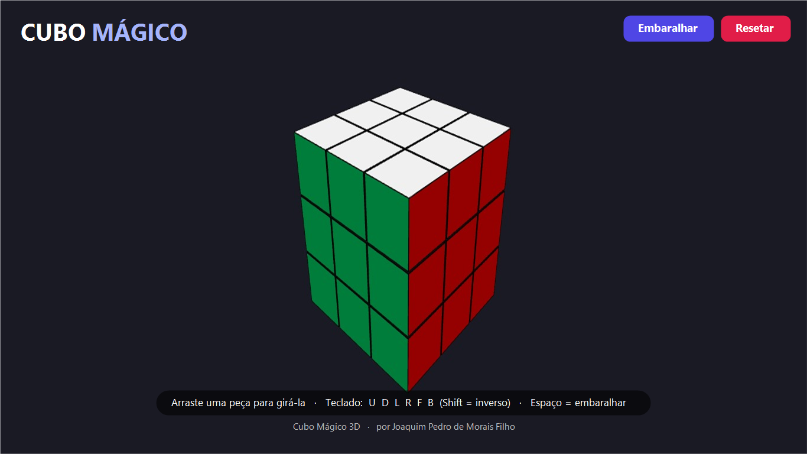

O clássico cubo mágico, em 3D. Gire as peças com o mouse ou o teclado, embaralhe e tente resolver — no seu ritmo, 100% local e sem anúncios.

Um cubo mágico de verdade em três dimensões, com animação suave.
Arraste uma peça para girar a camada; arraste o fundo para orbitar a câmera.
Notação U/D/L/R/F/B, Shift para o inverso e Espaço para embaralhar.
Roda 100% local. Sem internet, sem anúncios, sem cadastro, sem coletar dados.
| Ação | Mouse | Teclado |
|---|---|---|
| Girar uma camada | Arraste uma peça | U D L R F B (Shift = inverso) |
| Girar a câmera | Arraste o fundo | — |
| Zoom | Scroll | — |
| Embaralhar | Botão Embaralhar | Espaço |
| Resetar | Botão Resetar | — |
U=cima, D=baixo, L=esquerda, R=direita, F=frente, B=trás — a notação padrão do cubo mágico.
Instalação com um clique, atualizações automáticas.
Extraia o .zip e dê dois cliques. Requer o Microsoft Edge WebView2 Runtime (já incluso no Windows 11 e na maioria dos Windows 10).